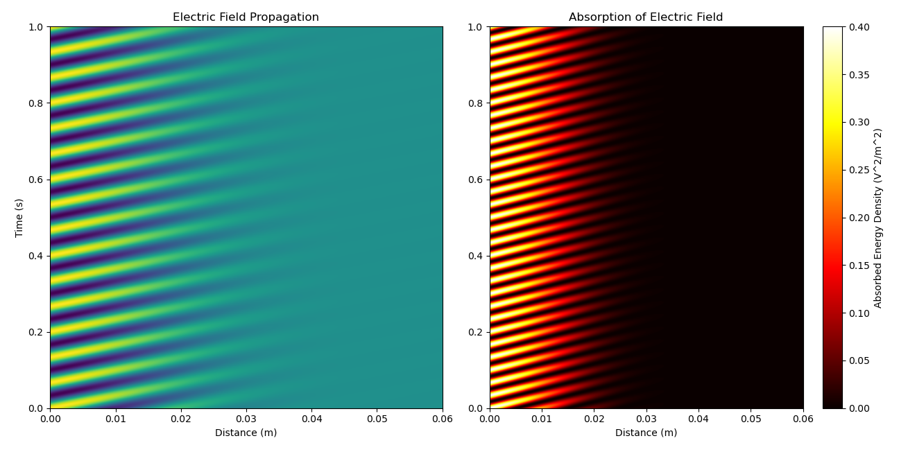
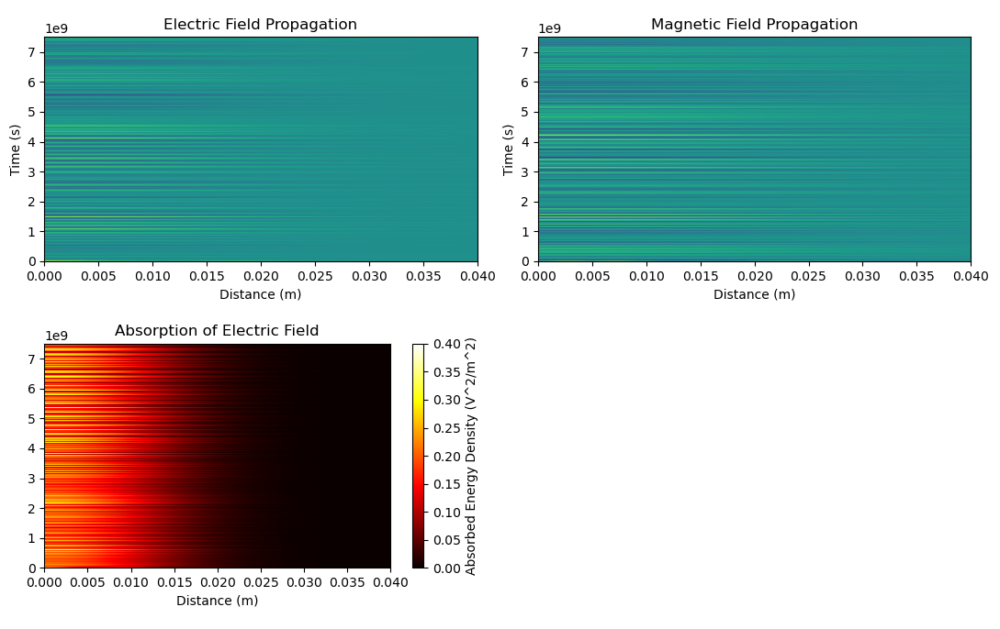

The Stable Chaos Model A Mathematical Framework for Emergent System Dynamics
This paper presents the Stable Chaos Model, a novel mathematical framework that unifies chaos theory and stability analysis through wave-based transceiver networks. We demonstrate that chaos and stability are not opposing forces but complementary aspects of a unified system capable of infinite scalability and emergent self-organization.
Research Overview
Wave-Based Foundation
Unified mathematical framework based on wave dynamics and transceiver networks, modeling information propagation through complex systems.
Chaos-Stability Unity
Demonstrates mathematically that chaos and stability are complementary aspects of the same underlying dynamics, not opposing forces.
Infinite Scalability
First-principle foundations enable scaling from quantum mechanical systems to cosmological structures with consistent mathematical treatment.
Emergent Intelligence
Simple interaction rules give rise to complex behaviors, self-organization, and emergent system properties across multiple domains.
Core Theory
Hybrid Abstract Transitory States (HATS)
The foundation of our model lies in systems that exist in superposition between discrete states, representing all possible states simultaneously in a quantum-inspired framework.
Ψ(t) = Σᵢ αᵢ(t)|Sᵢ⟩
Tranception Framework
Wave-based information processing through networks of transceivers (reflectors) that model resonance, threshold induction, and wave interference patterns.
∂²Ψ/∂t² + ω₀²Ψ = Σⱼ Cᵢⱼ∇²Ψⱼ + Iᵢ(t)
Network Dynamics
Four fundamental interaction rules create emergent stable chaos through local node relationships:
- Each node maintains attraction toward one neighbor
- Each node maintains repulsion toward its opposite neighbor
- Each node attempts to oppose its own opposite
- All nodes exist in superposition: A | B | !A | !B

Applications & Use Cases
🔬 Quantum Computing
- Qubit interaction optimization
- Decoherence mitigation strategies
- Quantum network architecture design
- Gate operation efficiency improvement
📡 Network Optimization
- Signal overlap minimization
- Dynamic antenna beamforming
- Mesh network routing protocols
- Electromagnetic compatibility
🧬 Biological Systems
- Neural network dynamics modeling
- Cardiac arrhythmia analysis
- Ecosystem population dynamics
- Biological rhythm synchronization
🎮 Graphics & Simulation
- 3D particle physics systems
- Procedural content generation
- Real-time energy simulation
- Complex visual effects
🔧 Materials Science
- Crystal growth modeling
- Metamaterial design
- Phase transition analysis
- Superconductor research
🤖 Machine Learning
- Wave-based neural architectures
- Self-organizing feature extraction
- Emergent pattern recognition
- Distributed learning systems
Technical Implementation
System Architecture
Performance Characteristics
Core Algorithms
Stable Chaos Evolution
def evolve_system(nodes, dt):
for node in nodes:
# Calculate neighbor attractions
attractions = sum(coupling * neighbor.state
for neighbor, coupling in node.neighbors)
# Calculate opposite repulsions
repulsions = sum(coupling * opposite.state
for opposite, coupling in node.opposites)
# Update node state
node.state += dt * (attractions - repulsions + node.self_interaction)
# Normalize to maintain superposition
node.normalize()Tranception Network Processing
async def process_tranception(reflectors, dt):
# Parallel resonance calculation
resonances = await asyncio.gather(
*[reflector.resonate() for reflector in reflectors]
)
# Reflection processing
reflections = await asyncio.gather(
*[reflection.propagate(dt) for reflection in all_reflections]
)
# State resolution
return await resolve_network_state(resonances, reflections)Technology Stack
Core Research
Visualization
Performance
Interactive Demonstration

Electromagnetic Wave Visualization
Real-time visualization of electromagnetic field propagation demonstrating wave interference, superposition, and stable chaos dynamics.
Planned Demonstrations
🎵 Audio Synthesis
Real-time audio generation using stable chaos principles for harmonic analysis and sound design.
🔄 Network Topology
Interactive network visualization showing tranception relationships and information flow patterns.
⚡ Energy Simulation
Power grid modeling and energy distribution optimization using stable chaos dynamics.
🧬 Biological Modeling
Neural network dynamics and biological rhythm visualization in real-time interactive format.
Advance the Research
Join the exploration of stable chaos dynamics and contribute to next-generation system understanding.